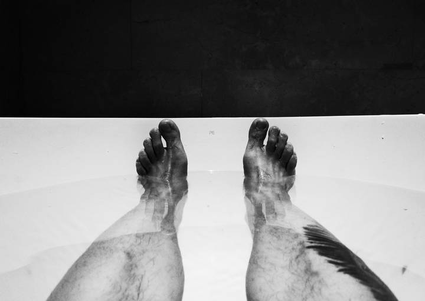
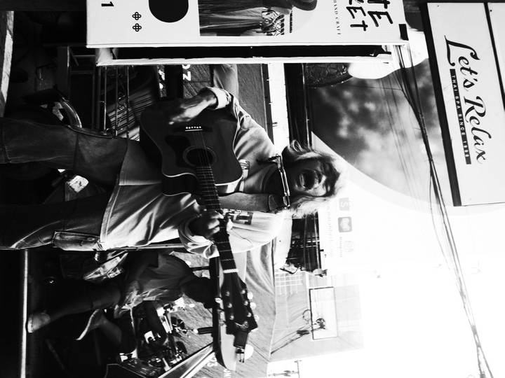
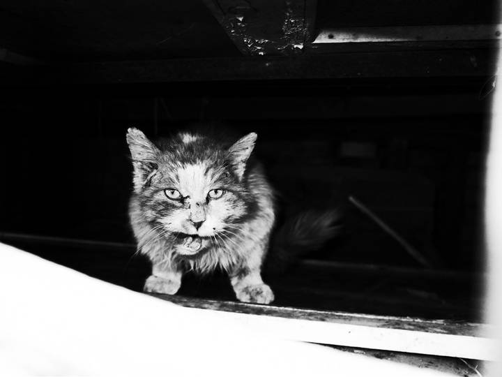
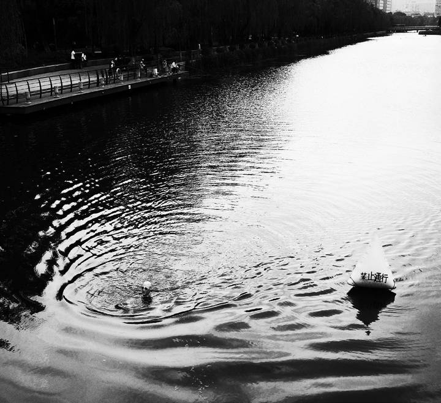
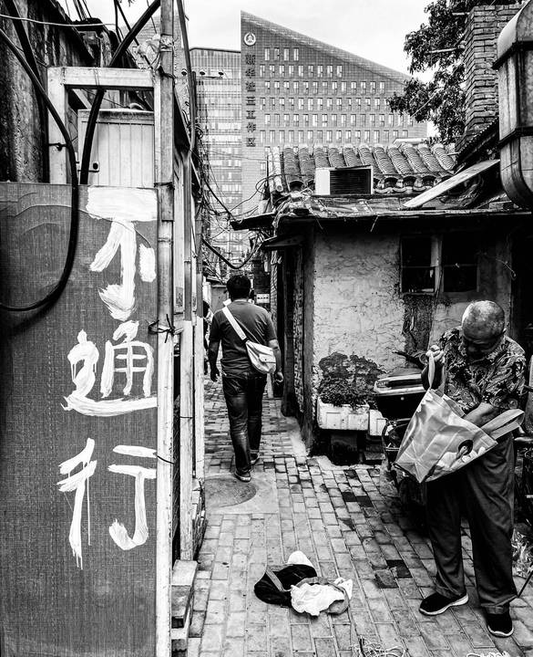
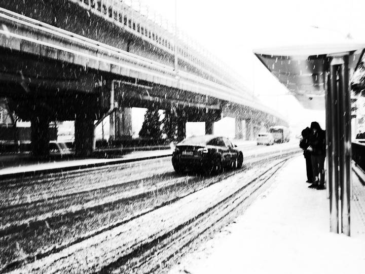
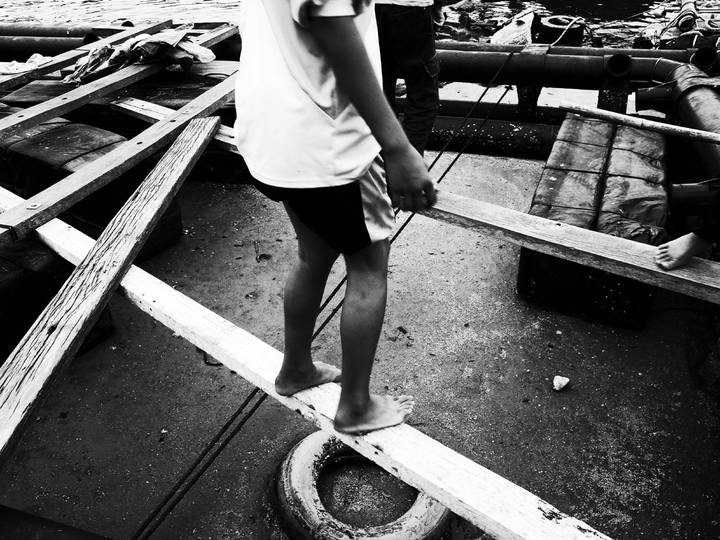

The Traveller。
What stays with us
A street corner, a station, a cat, a ripple on the water. The things we remember from a trip are not always its landmarks. These photographs return to the smaller encounters that make a place stay with us.
Something of being there stays in the photograph.
Travel memories rarely arrive in order. One place comes back as a face outside a shop; another as a cat in an alley or a few minutes spent beside the water.
These photographs leave the journey open-ended. Scenes from different places sit alongside one another, connected by the act of looking.








From the first issue of our magazine, Hudu (忽独). Photography and writing are credited above. Handwriting and annotations in the original artwork have been left as they are.
Pause. Take another look.
Explore more art projects